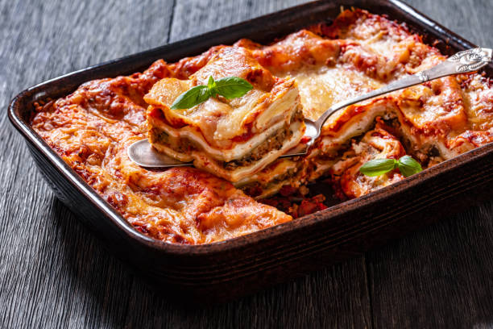

Lasagna

Here’s a straightforward, no-nonsense lasagna recipe you can actually make without losing your mind:
Easy Lasagna Recipe (Serves 4-6)
Ingredients
- 9-12 lasagna noodles (no-boil ones save time)
- 2 cups ricotta cheese (or cottage cheese if easier)
- 2 cups shredded mozzarella cheese
- 1/2 cup grated Parmesan cheese
- 1 lb (450g) ground beef or turkey
- 2 cups marinara sauce (store-bought works fine)
- 1 small onion, diced
- 2 cloves garlic, minced
- 1 tsp dried Italian herbs (oregano, basil, or mixed)
- Salt and pepper to taste
- Olive oil for cooking
Instructions
- Preheat oven: 180°C (350°F).
- Cook meat: In a skillet, heat 1 tbsp olive oil. Sauté onion and garlic 2–3 min until soft. Add ground meat, salt, pepper, and Italian herbs. Cook until browned. Stir in marinara sauce.
- Mix cheese: In a bowl, combine ricotta (or cottage), 1 cup mozzarella, and half the Parmesan. Add a pinch of salt and pepper.
-
Assemble:
- Spread a thin layer of meat sauce on the bottom of a baking dish.
- Layer 3-4 noodles on top.
- Spread 1/3 of the cheese mixture.
- Spoon 1/3 of the meat sauce.
- Repeat twice (noodles → cheese → sauce).
- Top with remaining mozzarella and Parmesan.
- Bake: Cover with foil and bake 25 minutes. Remove foil and bake another 15 minutes until cheese is golden and bubbly.
- Rest: Let it sit 5–10 minutes before slicing.